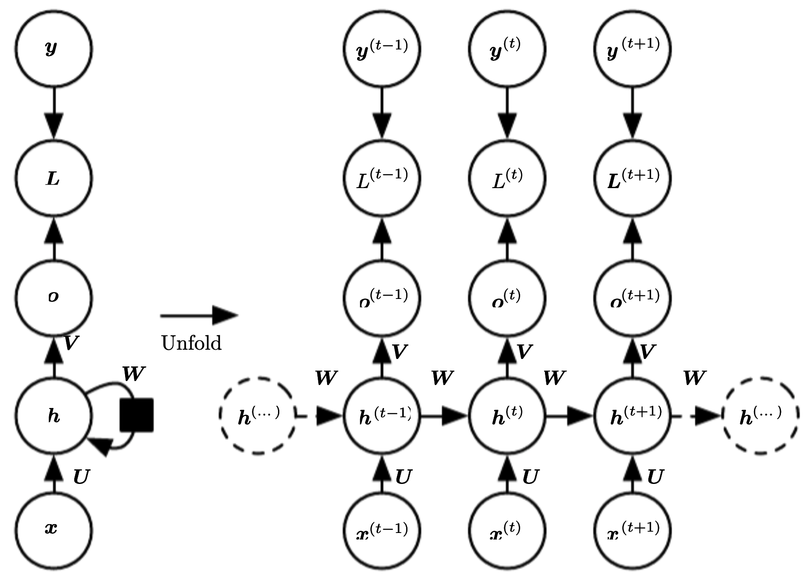

RNN循环神经网络
在DNN和CNN模型中，训练样本的输入和输出是比较确定的，信息的传递是单向的，这种限制虽然使得网络更加容易学习，但在一定程度上也减弱了神经网络模型的能力。在很多现实任务中，网络的输出不仅和当前时刻的输入有关，也和其过去一段时间的输入相关，此外前馈神经网络的训练样本输入是连续的序列，且序列的长短不一，难以处理时序数据。比如视频、文本、语音等等，时序数据的长度一般是不固定的，而前馈神经网络要求输入和输出的维度都是固定的，不能任意改变。因此，当处理这一类和时序数据相关的问题时，就需要一种能力更强的模型。
循环神经网络(Recurrent Neural Network,RNN)是一类具有短期记忆能力的神经网络，在循环神经网络中，神经元不但可以接收其他神经元的信息，也可以接收自身的信息，形成具有环路的网络结构。
RNN前向传播算法
RNN的训练样本是基于序列的，对于其中的任意序列索引号t，它对应的输入是样本序列中的x^{(t)}，模型在序列索引号t位置的隐藏状态h^{(t)}，则由x^{(t)}和在t-1位置的隐藏状态h^{(t-1)}共同决定。在任意索引号t，对应的模型预测输出为o^{(t)}，通过预测输出o^{(t)}和训练序列真实输出y^{(t)}，以及损失函数L^{(t)}。那么就可以使用DNN类似的方法训练模型。如下图所示

其中的相关符号表示含义为
| 记号 |
含义 |
| x^{(t)} |
代表序列索引号t时训练样本的输入。 |
| h^{(t)} |
代表序列索引号t时的隐藏状态，h^{(t)}由x^{(t)}和h^{(t-1)}共同决定 |
| o^{(t)} |
代表序列索引号t时模型的输出，o^{(t)}只由当前的隐藏状态h^{(t)}决定 |
| y^{(t)} |
代表在序列索引号t时训练样本序列的真实输出 |
| L^{(t)} |
代表在序列索引号t时模型的损失函数 |
U,W,V这三个矩阵是模型的线性关系参数，在整个RNN中是共享的，这点和DNN是很不同的，也正是由于共享，才体现除了RNN模型的"循环反馈"的思想。循环神经网络的的前向传播算法公式如下
\begin{align}
z_{j}^{(t)}&=\sum_{i} U_{j i} x_{i}^{(t)}+\sum_{i} W_{j i} h_{i}^{(t-1)}+b_{j} \\
h_{j}^{(t)}&=\tanh \left(z_{j}^{(t)}\right) \\
o_{j}^{(t)}&=\sum_{i} V_{j i} h_{i}^{(t)}+c_{j} \\
\hat{y}_{j}^{(t)}&=\operatorname{softmax}\left(o_{j}^{(t)}\right)
\end{align}
可以将上面的公式写成矩阵的形式为
\begin{aligned}
z^{(t)}&=U x^{(t)}+W h^{(t-1)}+b \\
h^{(t)}&=\tanh \left(z^{(t)}\right) \\
o^{(t)}&=V h^{(t)}+c \\
\hat{y}^{(t)}&=\operatorname{softmax}\left(o^{(t)}\right)
\end{aligned}
序列中每个时间节点的损失定义为：
L^{(t)}(y^{(t)},\hat{y}^{(t)}) = -y^{(t)}\operatorname{log}\hat{y}^{(t)}
循环神经网络中总损失定义为序列中每个时间节点的损失之和，即
\begin{align}
L
&=\sum_t L^{(t)}(y^{(t)},\hat{y}^{(t)})\\
&=-\sum_t y^{(t)}\operatorname{log}\hat{y}^{(t)}
\end{align}
误差反向传播算法
RNN的误差反向传播算法称为BPTT(Back-Propagation Through Time, BPTT)算法.BPTT算法也主要应用了链式求导法则，但与DNN和CNN的误差反向传播算法略有不同，其还要计算来自隐含结点的梯度，即所有时间节点的梯度。在RNN中总共需要学习5类参数，分别为\frac{\partial L}{\partial V},\frac{\partial L}{\partial W},\frac{\partial L}{\partial U},\frac{\partial L}{\partial b},\frac{\partial L}{\partial c}.
(1)求\frac{\partial L}{\partial V}
\begin{align}
\frac{\partial L^{(t)}}{\partial V_{j i}}
&=\frac{\partial L^{(t)}}{\partial o_{j}^{(t)}} \frac{\partial o_{j}^{(t)}}{\partial V_{j i}} \\
&=\frac{\partial\left(-\sum_{j} y_{j}^{(t)} \log \operatorname{softmax}\left(o_{j}^{(t)}\right)\right)}{\partial o_{j}^{(t)}} \frac{\partial o_{j}^{(t)}}{\partial V_{j i}} \\
&=\frac{\partial\left(-\sum_{j} y_{j}^{(t)} \log \left(e^{(t)} / \sum_{k} e^{(t)}\right)\right)}{\partial o_{j}^{(t)}} h_{i}^{(t)} \\
&=\frac{\partial\left(-\sum_{j} y_{j}^{(t)}\left(o_{j}^{(t)}-\log \sum_{k} e^{(t)}\right)\right)}{\partial o_{j}^{(t)}} h_{i}^{(t)} \\
&=\left(\hat{y}_{j}^{(t)}-y_{j}^{(t)}\right) h_{i}^{(t)}
\end{align}
矩阵的形式为
\begin{align}
\frac{\partial L^{(t)}}{\partial V}
&=\left(\hat{y}^{(t)}-y^{(t)}\right)\left(h^{(t)}\right)^{\top}\\
&=\left(\hat{y}^{(t)}-y^{(t)}\right) \otimes h^{(t)}\\
\end{align}
所以\frac{\partial L}{\partial V} 的反向传播公式为
\frac{\partial L}{\partial V}
= \sum_t \frac{\partial L^{(t)}}{\partial V}
=\sum_t \left(\hat{y}^{(t)}-y^{(t)}\right)\left(h^{(t)}\right)^{\top}
这个是最基本的\operatorname{softmax}损失函数的反向传播公式。
(2)求\frac{\partial L}{\partial c}
\frac{\partial L^{(t)}}{\partial c_j} =
\frac{\partial L^{(t)}}{\partial o^{(t)}_j}\frac{\partial o^{(t)}_j}{\partial c_j}
=\hat{y}^{(t)}_j-y^{(t)}_j
矩阵的形式为
\frac{\partial L^{(t)}}{\partial c} = \hat{y}^{(t)}-y^{(t)}
所以\frac{\partial L}{\partial c}的反向传播公式为
\frac{\partial L}{\partial c} =\sum_t \frac{\partial L^{(t)}}{\partial c}=\sum_t \left( \hat{y}^{(t)}-y^{(t)} \right)
(3)求\frac{\partial L}{\partial W}
\begin{align}
\frac{\partial L^{(t)}}{\partial W} &=\frac{\partial L^{(t)}}{\partial h^{(t)}} \frac{\partial h^{(t)}}{\partial W} \\
&=\frac{\partial L^{(t)}}{\partial h^{(t)}}\left(\frac{\partial h^{(t)}}{\partial W}+\frac{\partial h^{(t)}}{\partial h^{(t-1)}} \frac{\partial h^{(t-1)}}{\partial W}\right) \\
&=\frac{\partial L^{(t)}}{\partial h^{(t)}} \frac{\partial h^{(t)}}{\partial W}+\frac{\partial L^{(t)}}{\partial h^{(t)}} \frac{\partial h^{(t)}}{\partial h^{(t-1)}} \frac{\partial h^{(t-1)}}{\partial W}+\cdots \\
&+\frac{\partial L^{(t)}}{\partial h^{(t)}} \frac{\partial h^{(t)}}{\partial h^{(t-1)}} \frac{\partial h^{(t-1)}}{\partial h^{(t-2)}} \cdots \frac{\partial h^{(0)}}{\partial W} \\
&=\sum_{k=0}^{t} \frac{\partial L^{(t)}}{\partial h^{(t)}} \frac{\partial h^{(t)}}{\partial h^{(k)}} \frac{\partial h^{(k)}}{\partial W}
\end{align}
从上面的公式可以看出，由于循环神经网络的循环体共享参数W，因此某一个时刻损失函数关于W的梯度等于该时刻之前所有的W的梯度之和。
令误差\delta^{(t)}_k=\frac{\partial L^{(t)}}{\partial h^{(k)}}则
\frac{\partial L^{(t)}}{\partial W}=\delta_{t}^{(t)} \frac{\partial h^{(t)}}{\partial W}+\delta_{t-1}^{(t)} \frac{\partial h^{(t-1)}}{\partial W}+\cdots+\delta_{0}^{(t)} \frac{\partial h^{(0)}}{\partial W}=\sum_{k=0}^{t} \delta_{k}^{(t)} \frac{\partial h^{(k)}}{\partial W}
而
\frac{\partial h^{(k)}}{\partial W}=\frac{\partial h_{j}^{(k)}}{\partial W}=\frac{\partial h_{j}^{(k)}}{\partial o_{j}^{(k)}} \frac{\partial o_{j}^{(k)}}{\partial W_{j i}}=\left(1-\left(h_{j}^{(k)}\right)^{2}\right) h_{i}^{(k-1)}=\left(1-h^{(k)} \odot h^{(k)}\right)\left(h^{(k-1)}\right)^{\top}
因此，下面推导误差的反向传播计算公式。
当k=t时，有
\delta_{k, i}^{(t)}=\frac{\partial L^{(t)}}{\partial h_{i}^{(t)}}=\sum_{k} \frac{\partial L^{(t)}}{\partial o_{k}^{(t)}} \frac{\partial o_{k}^{(t)}}{\partial h_{i}^{(t)}}=\sum_{k}\left(\hat{y}_{k}^{(t)}-y_{k}^{(t)}\right) V_{k i}=V^{\top}\left(\hat{y}^{(t)}-y^{(t)}\right)
所以有
\delta_{t}^{(t)}=\frac{\partial L^{(t)}}{\partial h^{(t)}}=\frac{\partial L^{(t)}}{\partial o^{(t)}} \frac{\partial o^{(t)}}{\partial h^{(t)}}=V^{\top}\left(\hat{y}^{(t)}-y^{(t)}\right)
接下来，当已知\delta_k^{(t)}时，求\delta^{(t)}_{k-1}。因为
\begin{align}
\delta_{k-1, i}^{(t)} &=\frac{\partial L^{(t)}}{\partial h_{i}^{(k-1)}} \\
&=\sum_{j} \frac{\partial L^{(t)}}{\partial h_{j}^{(k)}} \frac{\partial h_{j}^{(k)}}{\partial h_{i}^{(k-1)}} \\
&=\sum_{j} \delta_{k, j}^{(t)} \frac{\partial h_{j}^{(k)}}{\partial z_{j}^{(k)}} \frac{\partial z_{j}^{(k)}}{\partial h_{i}^{(k-1)}} \\
&=\sum_{j} \delta_{k, j}^{(t)}\left(1-\left(h_{j}^{(k)}\right)^{2}\right) W_{j i} \\
&=W^{\top} \delta_{k}^{(t)} \odot\left(1-h^{(k)} \odot h^{(k)}\right)
\end{align}
所以
\delta_{k-1}^{(t)}=\frac{\partial L^{(t)}}{\partial h^{(k-1)}}=\frac{\partial L^{(t)}}{\partial h^{(k)}} \frac{\partial h^{(k)}}{\partial h^{(k-1)}}=W^{\top} \delta_{k}^{(t)} \odot\left(1-h^{(k)} \odot h^{(k)}\right)
将上面的式子带入即可得到
\frac{\partial L^{(t)}}{\partial W}=\sum_{k=0}^{t} \frac{\partial L^{(t)}}{\partial h^{(k)}} \frac{\partial h^{(k)}}{\partial W}=\sum_{k=0}^{t} \delta_{k}^{(t)}\left(1-h^{(k)} \odot h^{(k)}\right)\left(h^{(k-1)}\right)^{\top}
最终，\frac{\partial L}{\partial W}的反向传播公式为
\frac{\partial L}{\partial W}=\sum_{t} \frac{\partial L^{(t)}}{\partial W}=\sum_{t} \sum_{k=0}^{t} \delta_{k}^{(t)}\left(1-h^{(k)} \odot h^{(k)}\right)\left(h^{(k-1)}\right)^{\top}
(4)求\frac{\partial L}{\partial U}
同理，由于循环神经网络的循环体共享U参数，因此某一时刻损失函数关于U的梯度等于该时刻之前所有的U的梯度之和。
\frac{\partial L^{(t)}}{\partial U}=\sum_{k=0}^{t} \frac{\partial L^{(t)}}{\partial h^{(k)}} \frac{\partial h^{(k)}}{\partial U}=\sum_{k=0}^{t} \delta_{k}^{(t)}\left(1-h^{(k)} \odot h^{(k)}\right)\left(x^{(k)}\right)^{\top}
所以\frac{\partial L}{\partial U}的反向传播计算公式为
\frac{\partial L}{\partial U}=\sum_{t} \frac{\partial L^{(t)}}{\partial U}=\sum_{t} \sum_{k=0}^{t} \delta_{k}^{(t)}\left(1-h^{(k)} \odot h^{(k)}\right)\left(x^{(k)}\right)^{\top}
(5)求\frac{\partial L}{\partial b}
对于\frac{\partial L}{\partial b}，同理可以得到
\begin{align}
\frac{\partial L^{(t)}}{\partial b_{j}} &=\sum_{k=0}^{t} \frac{\partial L^{(t)}}{\partial h_{j}^{(k)}} \frac{\partial h_{j}^{(k)}}{\partial b_{j}} \\
&=\sum_{k=0}^{t} \delta_{k, j}^{(t)}\left(1-\left(h_{j}^{(k)}\right)^{2}\right)
\end{align}
即
\frac{\partial L}{\partial b}=\sum_{t} \delta_{k}^{(t)}\left(1-h^{(k)} \odot h^{(k)}\right)
所以\frac{\partial L}{\partial b}的反向传播计算公式为
\frac{\partial L}{\partial b}=\sum_{t} \sum_{k=0}^{t} \delta_{k}^{(t)}\left(1-h^{(k)} \odot h^{(k)}\right)
RNN存在的问题
从上面的推导可以到看到，每次误差反向传播都会乘以W^{\top} \odot\left(1-h^{(k)} \odot h^{(k)}\right),由于多个W矩阵连续相乘，RNN很容易出现梯度爆炸问题，或梯度消失问题。在RNN中，由于多个W矩阵连续相乘，当深层的梯度消失时，深层的输入不再对输出产生影响，导致RNN无法学习到远距离的信息，即远距离的信息不会影响当前的输出，这被称为循环神经网络的长程依赖问题（Long-Term Dependencies Problem）.
解决长期依赖问题的有效方法就是改变循环神经网络的循环体结构，以便某一个时刻的误差能够反向传播足够远的距离，从而让远距离的信息能够决策该时刻的输出。如长短期记忆网络（Long Short-Term Memory Network,LSTM）和门控循环单元网络（Gated Recurrent Unit, GRU）等。